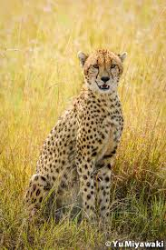

|

|
The Cheetah
One of the most recognisable animals in Kenya is the Cheetah.
These spotty cats-each with their own unique pattern-are skilled hunters, in part because of their natural speed and agility.
In fact Cheetahs are the fastest mammals on Earth. They can accelerate from 0 to 60 miles per hours in just three seconds.
Another interesting Cheetah fact? Unlike lions, tigers, jaguars, and leopards, Cheetahs can't roar-they can only purr.
These cats live and hunt in open grasslands across Africa. They can be found in countries including Kenya, Algeria, South Africa, and Niger.
The Internatioal Union for the Conservation of Nature (IUCN) classes Cheetahs as vulnerable.
This means the species is at high risk of extinction in the wild.
There are just 6,517 mature Cheetahs left in the wild, and their population is decreasing.
Cheetahs are at a particular risk from habitat loss because they need such a large range.
Most Cheetahs live in unprotected areas, where they come into conflict with farmers.
|